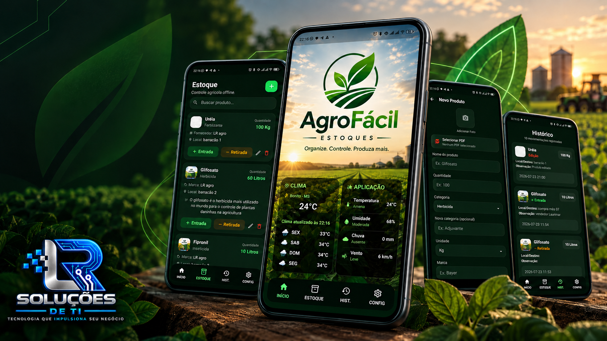

Controle offline
Consulte e gerencie seu estoque sem depender de conexão com a internet.
Controle seu estoque agrícola, acompanhe as condições climáticas, registre movimentações e mantenha as informações dos seus produtos sempre acessíveis.

Recursos pensados para facilitar o controle dos produtos e das atividades da fazenda.
Consulte e gerencie seu estoque sem depender de conexão com a internet.
Cadastre produtos, acompanhe quantidades e registre entradas e retiradas.
Armazene bulas em PDF no aparelho e consulte mesmo sem internet.
Gere arquivos de backup, restaure seus dados e compartilhe informações pelo WhatsApp.
Conheça as ferramentas disponíveis no Agro Fácil Estoque.
Visualize o nome da propriedade, acompanhe o clima atual e consulte a previsão dos próximos dias.
Tenha informações de temperatura, umidade, chuva e vento para auxiliar na avaliação das condições antes das aplicações agrícolas.
Cadastre e acompanhe os produtos utilizados na propriedade, mantendo as quantidades e informações sempre organizadas.
Cada produto pode ter uma ficha detalhada com informações importantes para consulta e organização.
Consulte o histórico das movimentações e acompanhe as alterações realizadas nos produtos.
Adicione produtos ao estoque com fotos, documentos, categorias, quantidades e informações específicas.
Informe quantidades, unidades de medida, origem das compras, destino dos produtos e observações de cada movimentação.
Personalize o aplicativo, gere backups, restaure informações e compartilhe estoque e histórico pelo WhatsApp.
O Agro Fácil permite gerenciar o estoque e consultar documentos armazenados no aparelho, mesmo em locais sem conexão com a internet.
Seus produtos e documentos sempre acessíveis.
Conheça o aplicativo e tenha o controle da sua propriedade na palma da mão.
Baixar na Google Play